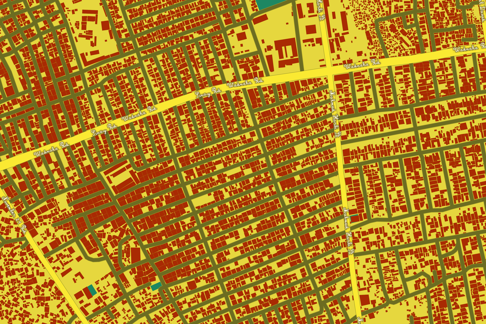
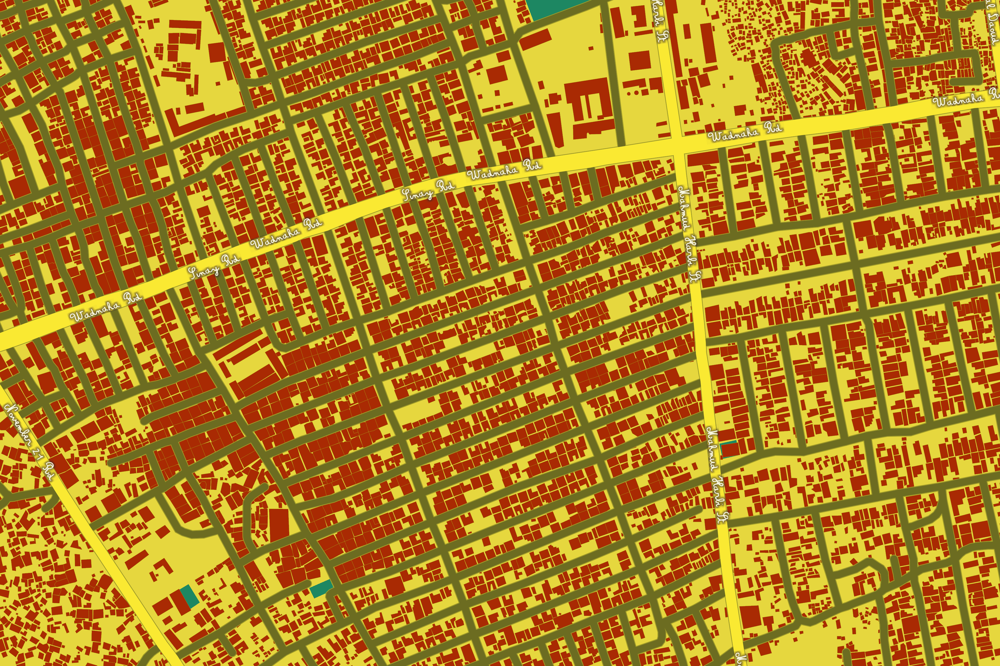
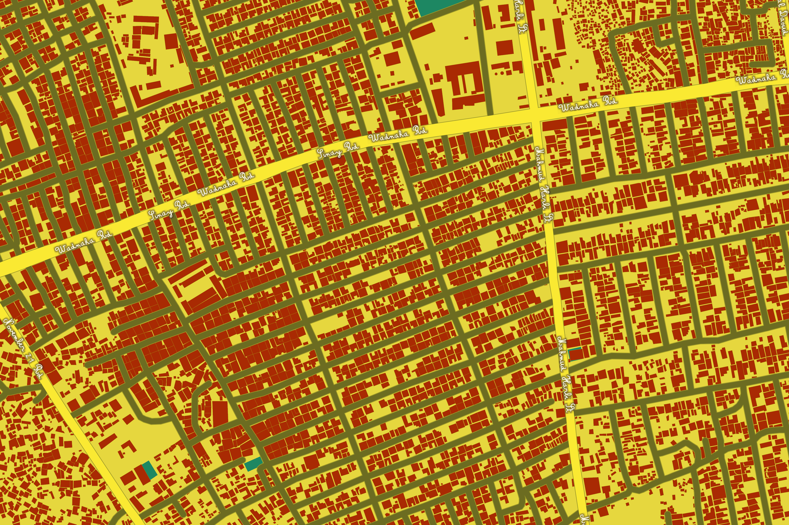
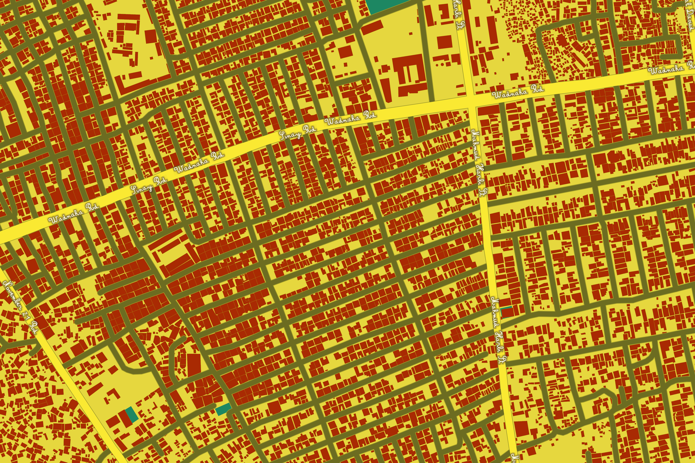

Fantasies for the Stage
New York City Ballet, 2013. Ashley Bouder & Company by Paul Kolnik
My style is based off costume designs by Marc Chagall in 1945 for the ballet 'The Firebird'
TLDR: Jump to the MapChagall and his wife left Europe for the United States to escape Nazi persecution during World War II. Once he arrived in the US, he started designing costumes and backdrops for ballet and opera.

The designs for Firebird were the first art pieces he made after the sudden death of his wife, Bella, in 1944.
In the map, the labels are inspired by his chunky signatures.

The colors and textures are inspired by the backgrounds and bodies in the drawings.
The map gets more saturated as you zoom in to imitate what it's like to look closer and closer at the costumes. Pan through the images to see how the texture changes.


 

 

Take a look at a few different geographies, starting with the Great Lakes.
Kathmandu, capital city of Nepal, surrounded by the Himalayas.
The Ten Thousand Islands National Wildlife Refuge on the Gulf side of Florida.
Mogadishu, Somalia.
Play around the full map.
Back to topMap created with Mapbox Studio, data from openstreetmap